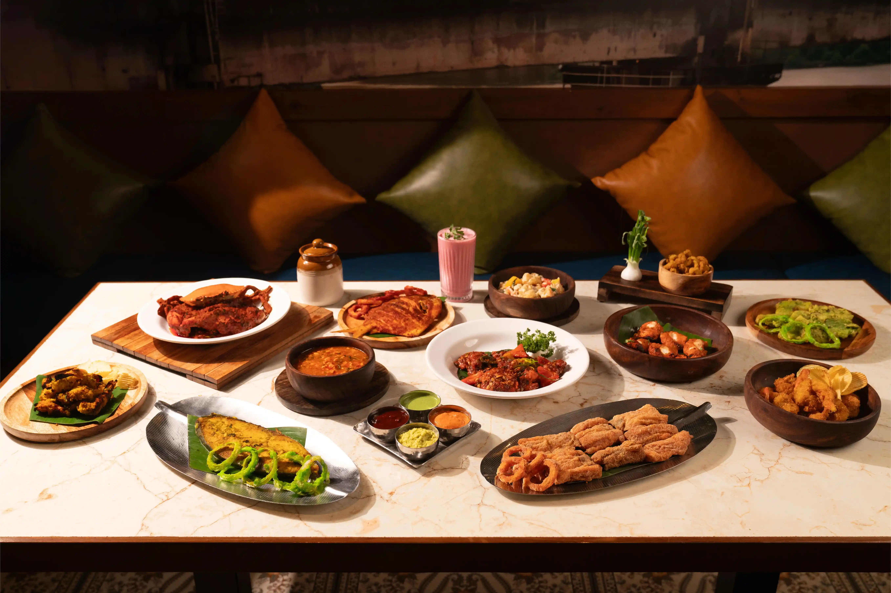
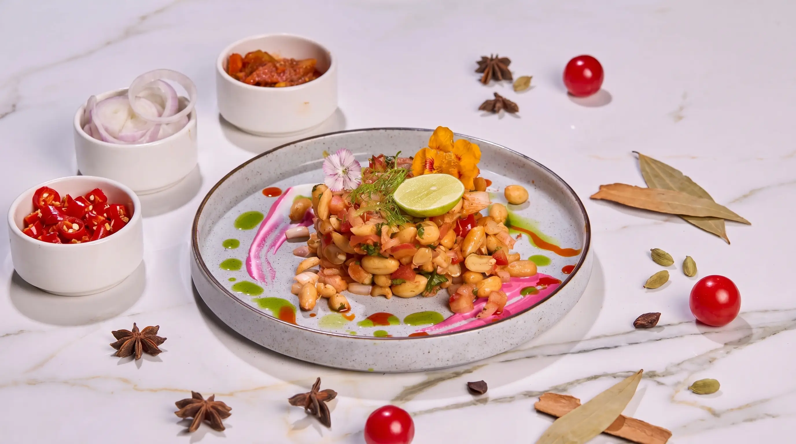
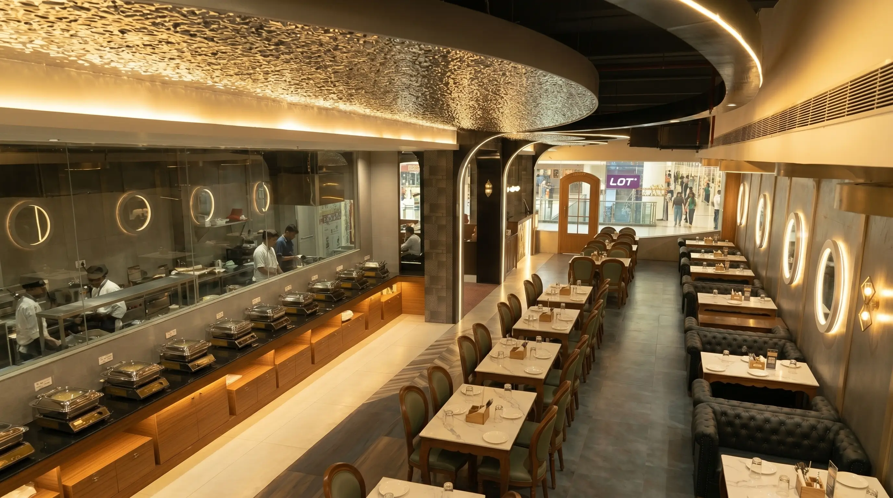

Menu
Coastal Indian Classics
A focused collection of dishes built for generous tables, refined service, and familiar Konkan flavor.
A Glimpse of the Coast
Fresh from the net, served on your plate.
Discover the vibrant colors and bold flavors of authentic Konkan cuisine.




